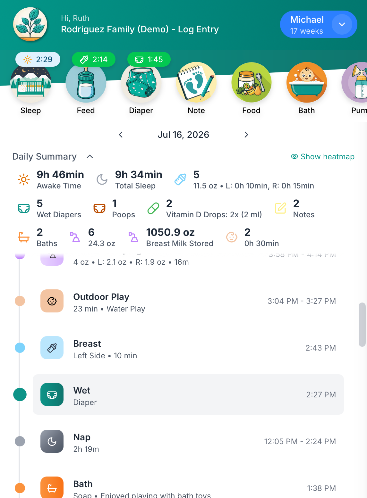
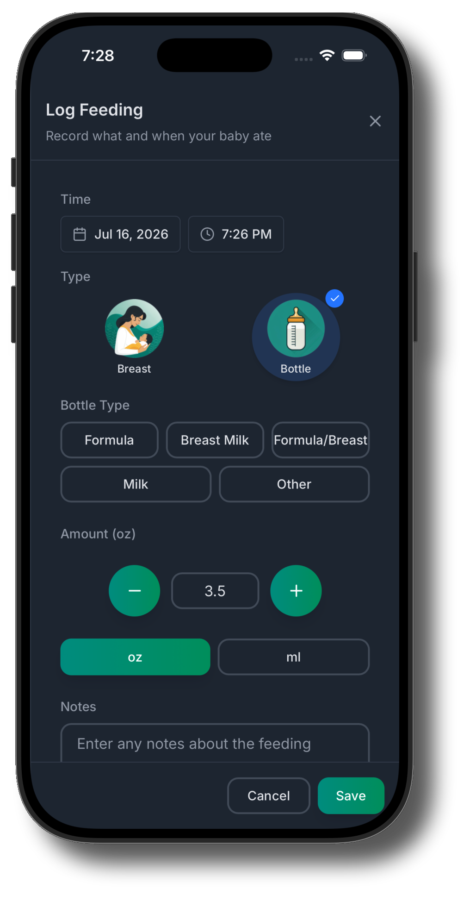
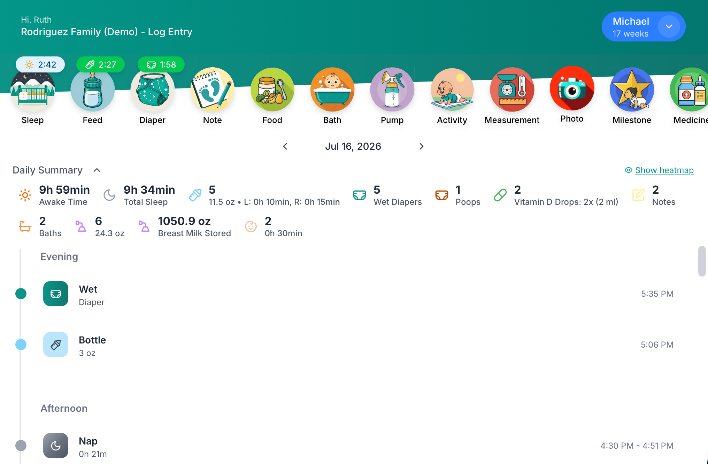
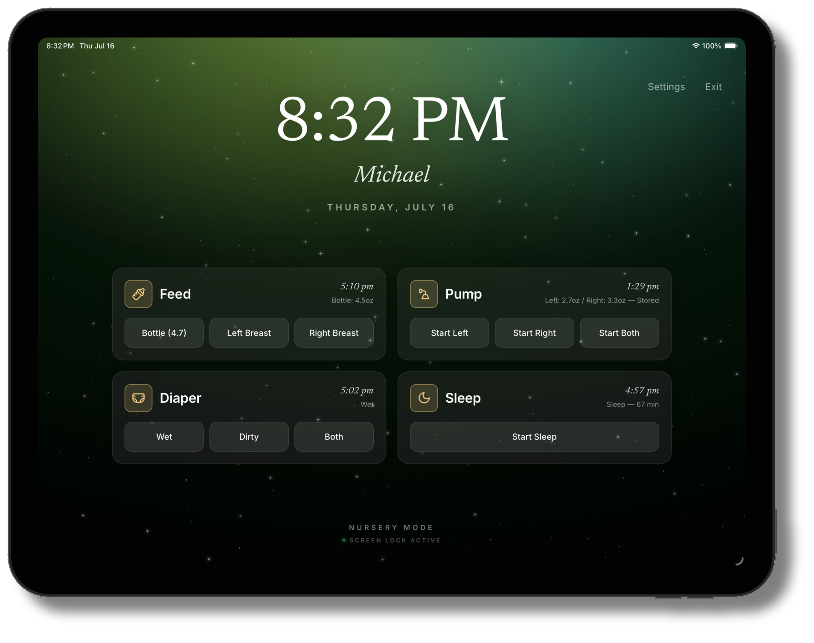

Sprout Track keeps parents, grandparents, and caretakers logging feeds, naps, and diapers in one shared place. The afternoon handoff stops needing a sticky note.
14 days free, no card required. Then $2.99/month, cancel anytime.
70+ families track with Sprout Track open source, 322 stars on GitHub


Sleep, feeds, diapers, pumping, medicine, baths, milestones, measurements. Big targets, sensible defaults, and the last amount pre-filled, because you are holding a baby with the other arm.

A daily summary up top, the full timeline below. Awake time, total sleep, ounces, diapers: the pediatrician’s questions, already answered.

A dimmed, always-on display made for the changing table. Tap once to log a feed or start a sleep timer, without waking anyone up.

Sprout Track is open source. No ads, no data brokers, no selling nap schedules to formula companies. Export everything whenever you like, and if you’d rather run it on your own server, the code is free and always will be.
Set up takes about two minutes. Invite the grandparents whenever you’re ready.
14 days free, no card required. Cancel anytime.